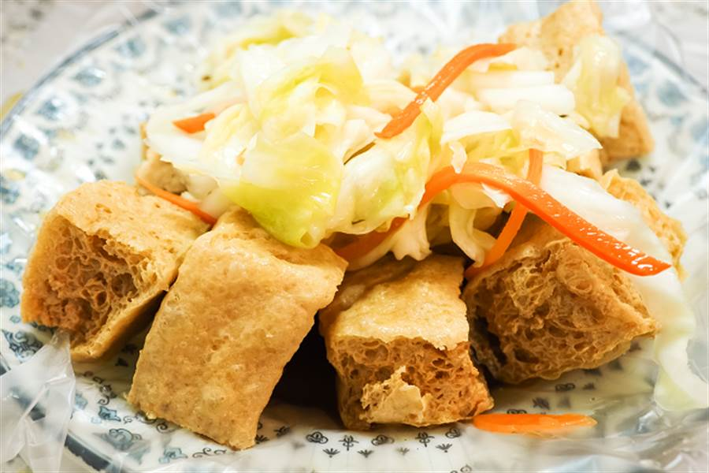
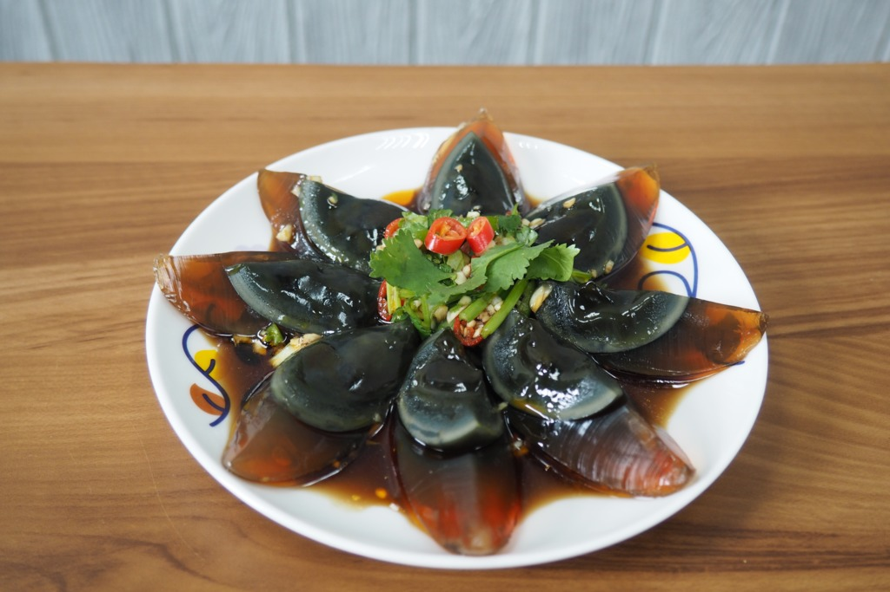
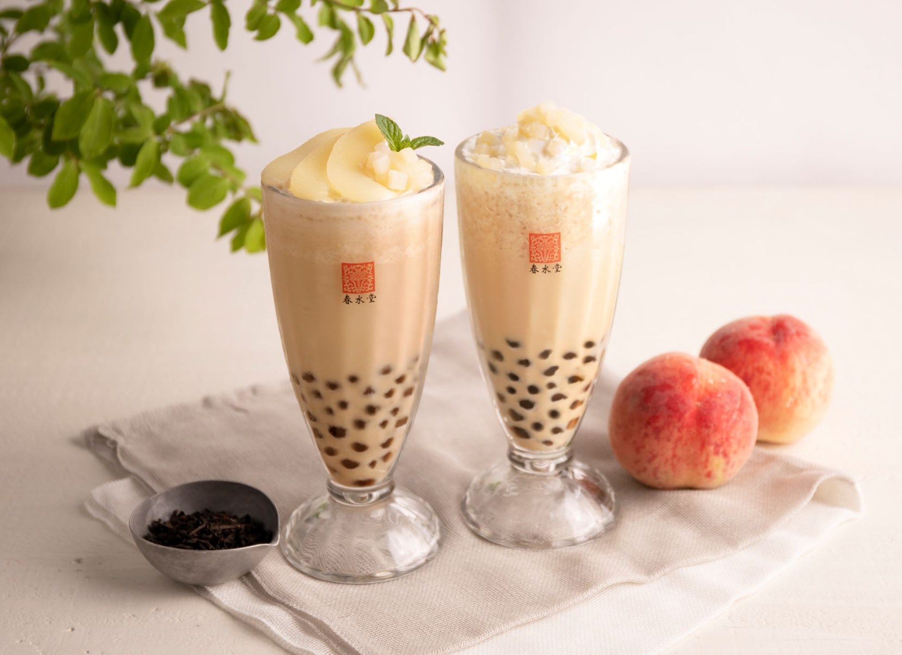
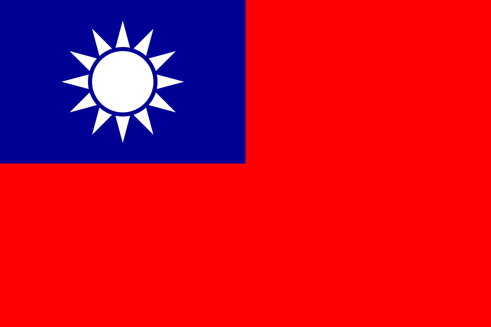
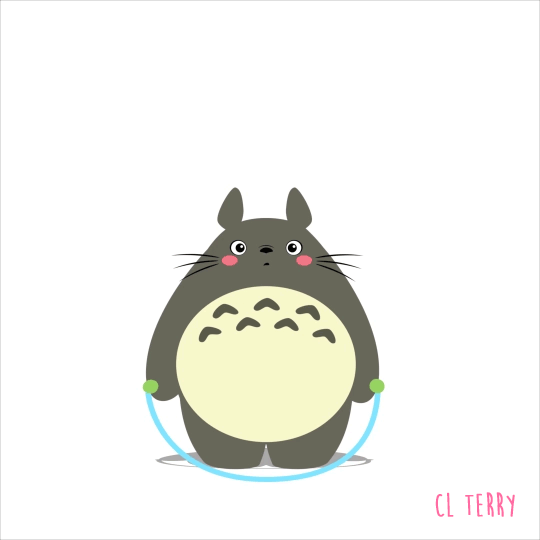

台灣
日本
壽司
拉麵
生魚片
韓國
辣炒年糕
泡菜
血腸
中國
烤鴨
餃子
麻婆豆腐
越南
河粉
鴨仔蛋
白玫瑰
印度
咖哩
拉茶
拉西
留言區
站長資訊

臭豆腐很有名氣，是中華地區的特色小吃之一，是流傳於中華地區及世界其他地方的豆腐發酵製品。
...(閱讀更多)
血糕又稱為米血或米血糕，是發源自台灣的一種米食糕點。
...(閱讀更多)

皮蛋在明代稱為「混沌子」,皮蛋於明朝初年在湖南省益陽縣在一個偶然的機會下發現。
...(閱讀更多)

珍珠奶茶，簡稱珍奶，又稱粉圓奶茶、波霸奶茶、泡泡茶
...(閱讀更多)

臭豆腐
豬血糕
皮蛋
珍珠奶茶

運動是為了要吃更多的美食哦 ! !